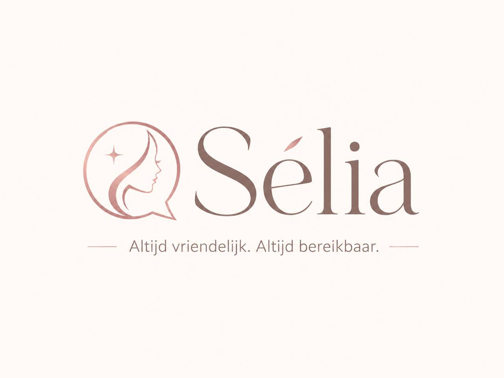

Snelle verwachtingen
Nieuwe klanten willen snel duidelijkheid over prijs, plek en behandeling. Blijft het stil, dan zoeken ze makkelijk verder.

Sélia Bereikbaar terwijl jij behandelt.AI-receptioniste voor beauty & wellness salons
Sélia beantwoordt als AI-receptioniste nieuwe klantvragen vriendelijk, stelt de juiste vervolgvragen en zet afspraakverzoeken overzichtelijk voor je klaar. Jij houdt aandacht bij je klant, zonder dat nieuwe aanvragen blijven liggen.
Zo ziet Sélia eruit voor je klant: vriendelijk, duidelijk en binnen jouw regels.
Herkenbaar in de salon
Een nieuwe klant vraagt om een BIAB-afspraak terwijl jij net begint aan een behandeling. Iemand wil weten wat een lash lift kost. Een vaste klant wil haar afspraak verplaatsen. Je ziet het bericht pas later, en soms heeft de klant dan al ergens anders geboekt.
Nieuwe klanten willen snel duidelijkheid over prijs, plek en behandeling. Blijft het stil, dan zoeken ze makkelijk verder.
Veel berichten gaan over behandelingen, duur, voorbereiding, beschikbaarheid, prijzen en locatie.
Tijdens een behandeling wil je niet steeds je telefoon pakken. Sélia houdt klantcontact netjes op gang.
Wat Sélia doet
Sélia reageert namens je salon op WhatsApp-aanvragen, stelt slimme vervolgvragen en houdt het gesprek overzichtelijk. Zo krijgt je klant snel antwoord en weet jij precies wat er opgevolgd moet worden.
Nieuwe klanten krijgen een professionele eerste reactie die past bij jouw salon en toon.
Sélia vraagt naar behandeling, gewenste dag, voorkeurstijd, wensen en contactgegevens.
Op basis van je website kan Sélia uitleg geven over behandelingen, voorbereiding en praktische informatie.
Je ziet wat iemand wil, welke voorkeuren er zijn en waar jij zelf nog op moet beslissen.
Veiligheid & controle
Jij bepaalt wat Sélia mag zeggen, welke informatie nodig is en wanneer iets eerst naar jou moet. Zo blijft het klantcontact vriendelijk en snel, zonder dat Sélia dingen belooft die niet zeker zijn.
Voor wie
Sélia werkt het best voor ondernemers die veel aanvragen, prijsvragen en afspraakverzoeken ontvangen terwijl ze zelf met klanten bezig zijn.
Voor vragen over gezichtsbehandelingen, huidverbetering, intake, behandelduur en nazorg.
Vraag een voorbeeld aanVoor BIAB, nieuwe sets, refills, nail art, afspraak verplaatsen en prijsindicaties.
Vraag een voorbeeld aanVoor lash lifts, brow lamination, bijwerken, voorbereiding en veelgestelde klantvragen.
Vraag een voorbeeld aanVoor behandelinformatie, beschikbaarheid, intakevragen en rustige opvolging van aanvragen.
Vraag een voorbeeld aanAanpak
We leggen je behandelingen, werkwijze, toon en veelgestelde vragen vast. Dit kan eventueel automatisch op basis van de informatie die beschikbaar is op jouw website.
Sélia wordt ingericht met jouw saloninformatie, regels en gewenste opvolging.
We testen herkenbare situaties, zoals vragen over BIAB, brows, lashes, gezichtsbehandelingen, beschikbaarheid en openingstijden.
Sélia vangt nieuwe aanvragen op en houdt jou overzichtelijk op de hoogte.
Veelgestelde vragen
Ja. Sélia kan nieuwe WhatsApp-aanvragen vriendelijk opvangen en vervolgvragen stellen volgens jouw regels.
Alleen als jij dat toestaat en de informatie zeker is. Bij twijfel zet Sélia het gesprek klaar voor jou.
Ja. We kunnen behandelingen, prijzen, voorbereiding, openingstijden en veelgestelde vragen uit je website gebruiken.
Juist. Sélia is bedoeld voor ondernemers die zelf behandelen en niet altijd direct kunnen reageren.
Prijzen
Start laagdrempelig met WhatsApp-aanvraagopvang, of voeg agenda-afstemming toe als je ook hulp wilt bij plannen.
Voor salons die klanten snel en vriendelijk willen helpen, terwijl jij alle aandacht houdt bij de behandeling.
Voor salons die ook hulp willen bij plannen en agenda-afstemming.
Kennismaken
Vraag een salondemo aan. Op basis van jouw website laten we binnen 24 uur zien hoe Sélia aanvragen vriendelijk opvangt en overzichtelijk voor je klaarzet.